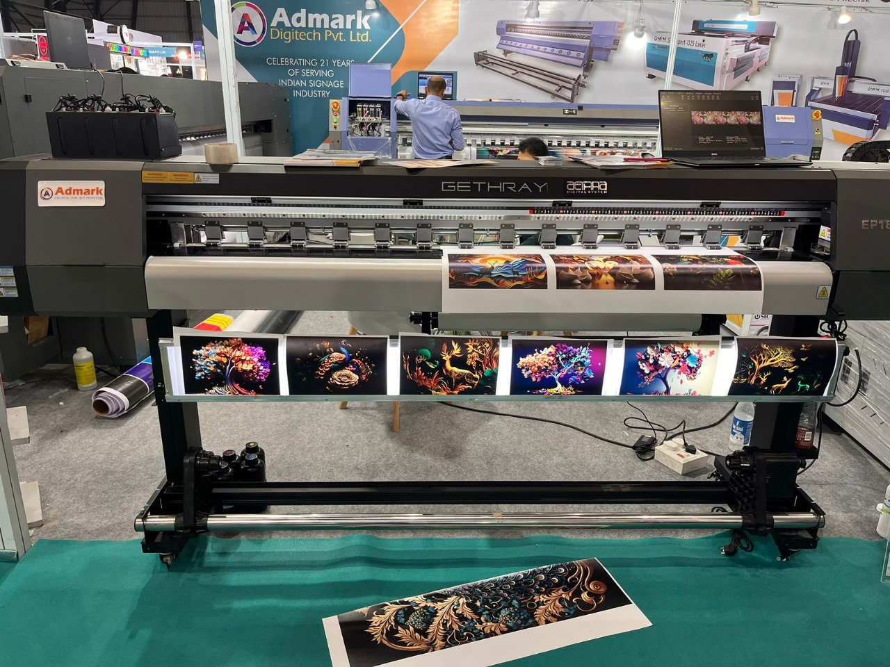
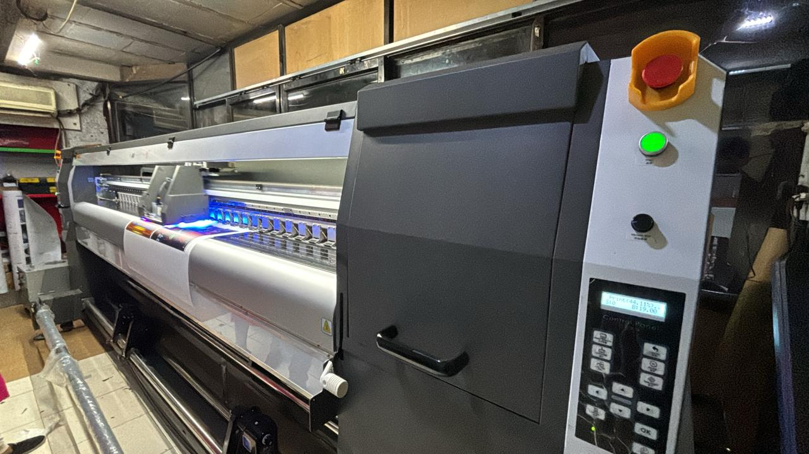

Single Head Body
Ideal for small businesses needing precision printing at lower volumes.
View Product


Ideal for small businesses needing precision printing at lower volumes.
View Product

Wide-format printer ideal for large banner printing with efficient output.
View ProductIndustrial-grade machine offering maximum speed and width for high-volume printing.
View ProductA UV roll to roll printer is used for high-quality printing on flexible media such as vinyl, flex banners, wallpapers, backlit films, and one-way vision materials for advertising and branding applications.
UV roll to roll printers offer fast printing speed, instant UV ink curing, vibrant print quality, durable output, and efficient production for indoor and outdoor advertising.
These printers can print on vinyl, flex, mesh banners, wallpapers, backlit media, one-way vision films, and various flexible advertising materials.
Yes, UV roll to roll printers are widely used in signage manufacturing, advertising agencies, digital printing businesses, and branding industries for bulk production work.
You should choose a UV roll to roll printer based on print width, printhead technology, printing speed, media compatibility, and production requirements.